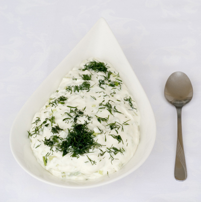

Салата "Снежанка"
Продукти:
- 1/2 средно голяма краставица
- 1 кафеена чаша изцедено кисело мляко
- 1 чаена лъжичка орехови ядки - смлени
- копър
- сол на вкус
Начин на приготвяне:
Към изцеденото мляко се добавят измитата, обелена и нарязана на дребно краставица, смлените орехови ядки, нарязаният на дребно копър и се овкусява със сол.